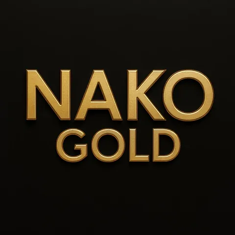

Visual identity / The art of sound
AFTER DARK.
IN FULL COLOR.
A restrained selection of official portraiture, release artwork and the signature gold identity.
Artist & album
Meet the visuals.

Artist portrait

Album 01 cover

Signature gold wordmark
Stage energy
The crowd. The color. The music.
Stage-inspired concept visuals that capture the atmosphere. Concept art, not confirmed live appearances.
Waterfront sunset · concept art
Neon nightclub · concept art